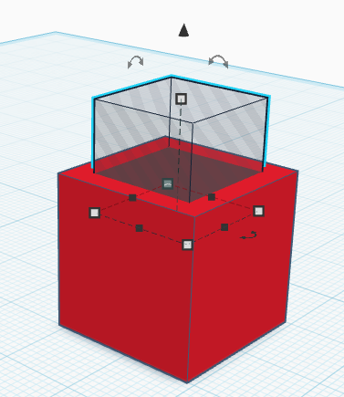
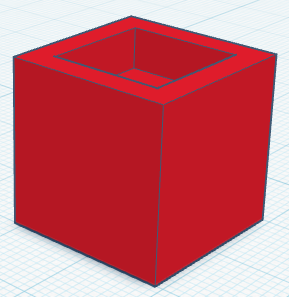
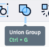
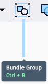
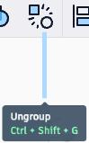
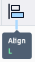
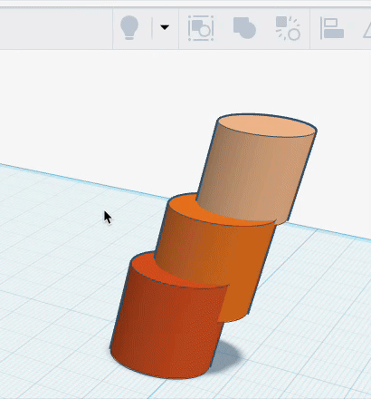
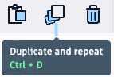
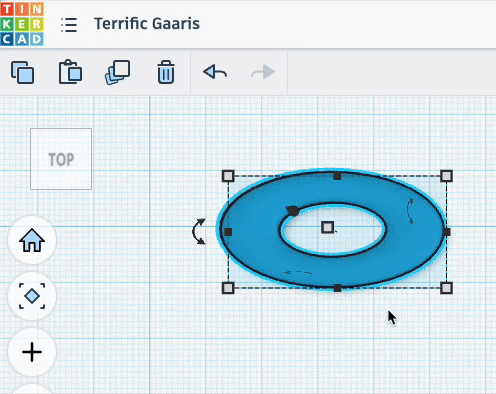
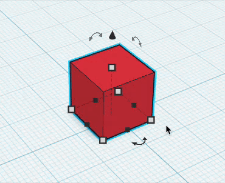

Core Idea
Everything starts with simple shapes
- Add with solid shapes.
- Subtract with holes.
- Combine parts by grouping.
3D Modeling Quick Reference
Build from simple shapes, cut with holes, and refine with alignment, duplication, and careful viewing.

Key Reminder
Start with big simple forms. Get the idea working first, then clean up, center, duplicate, and sharpen the details.
Core Idea
Shapes
Holes


Result: the solid is cut.
Grouping



Grouping combines shapes into a single object.
Ungroup
Align


Use it for
Duplicate


Use it for
Scale

Move Object
Navigate
Additional tools
Workflow
Common Mistakes
Strong Models